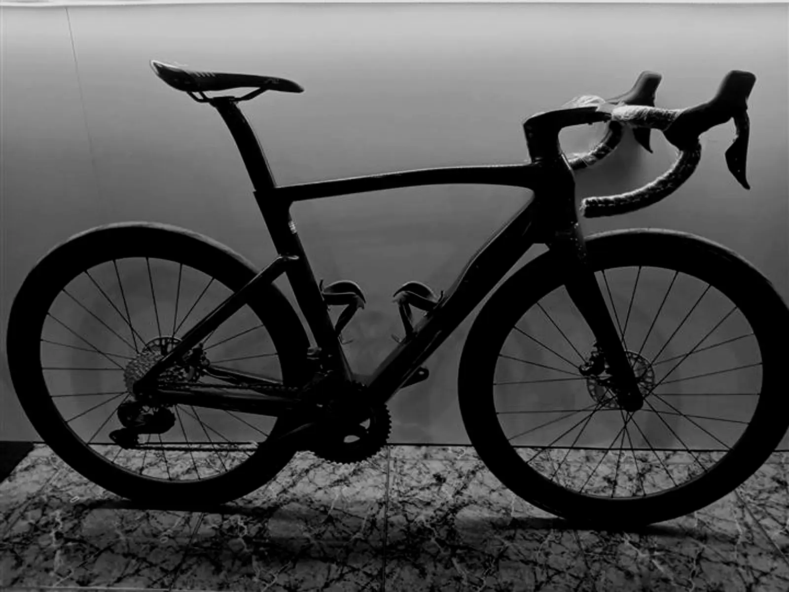

Inicio/Historia
desde 1992
Una tienda de bicis de Bergara que nació de una carrera: la de Iñigo Igartua, ciclista, y de una amistad belga.
quiénes somos
Los hermanos Miren e Iñigo Igartua echaron a andar la actividad en 1992.
Iñigo pasa largos periodos en Bélgica preparando la temporada de ciclocross: Súper Prestigio, Copa del Mundo y pruebas nacionales. En Oudenaarde conoce a los hermanos Frans y Luck Assez, fundadores de Flanders.
Los hermanos Miren e Iñigo Igartua inician la actividad económica de Biciprecisión Igartua.
Se abre el comercio al público. La tienda se centra en la venta de material ciclista y empieza a traer Flanders, en exclusiva para España y Portugal.
Se suma la importación de las bicicletas del campeonísimo Francesco Moser.
Distribuidor de numerosas marcas, con reconocido prestigio, y todavía en exclusiva con la marca belga Flanders.
iñigo igartua
Su palmarés como ciclista.
Datos de «Quiénes somos» de su web actual. Falta confirmar con Iñigo cómo quiere contar el resto (Campeonato de España Elite y Sub 23, Súper Prestigio Roma, Mundial Amateur Getxo).
pásate por zubieta
Lunes a viernes 9:00–13:00 y 16:00–20:00 · sábados 9:00–13:00